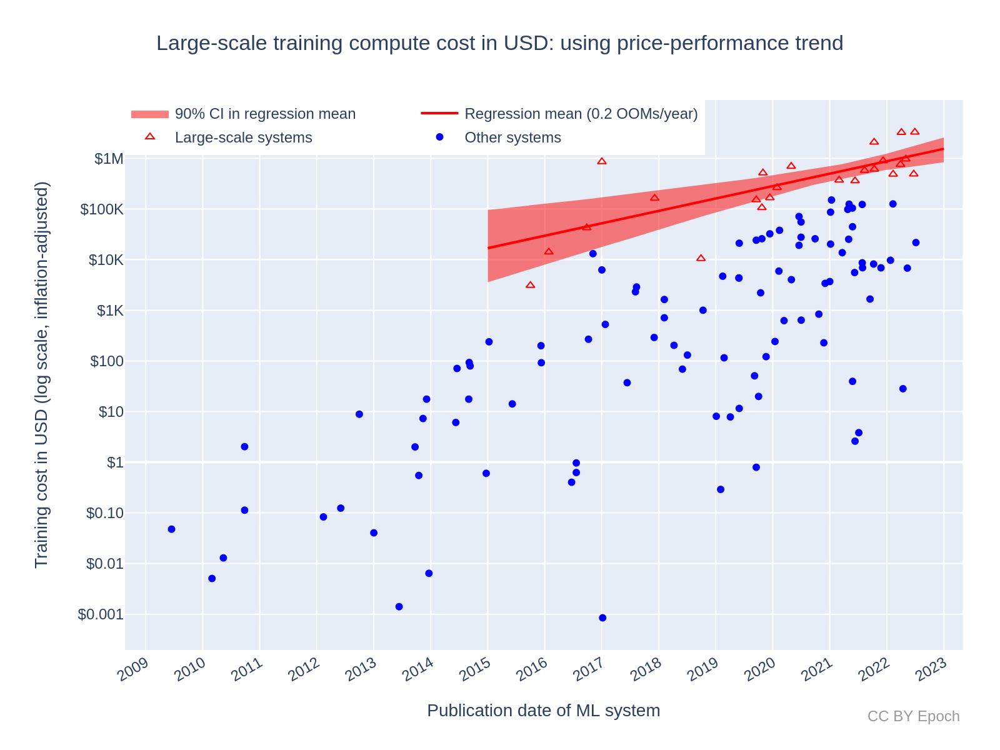
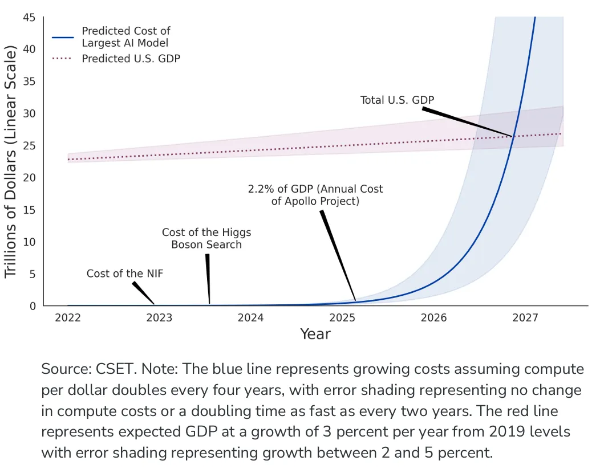

Chapter 3 Hardware
Hardware plays a crucial role in the development of AI Large Language Models (LLMs), as it influences the speed and effectiveness of the model’s learning process. Additionally, the nature, size, intricacy, and objective of the model dictate its hardware needs. Key hardware components for AI training include: Processor (CPU) & Graphic Card (GPU), Memory (RAM) & Storage (Hard Drives) and Interconnects.
3.1 Case Analysis - ChatGPT
ChatGPT has purchased over 10,000 high-quality NVIDIA GPUs, boosting Nvidia product sales to between $3 billion and $11 billion annually. Among the GPUs, the NVIDIA A100 HPC1 stands out, priced at $12,500. It’s a top-notch GPU with 80GB of HBM2 memory, providing up to 2TBps memory bandwidth, ideal for running massive models and datasets. However, even with this GPU, there are hurdles in enhancing AI training. For instance, when using PyTorch on a server with multiple GPUs, ChatGPT can only run smaller models like GPT-L due to its complexity and memory fragmentation. As a result, expanding its operation to 4 or 8 GPUs doesn’t significantly improve performance. For memory and storage, ChatGPT relies on a mix of technologies such as HBM, SSDs, and Cloud State. Furthermore, it uses PCI Express, NVLink, and Ethernet for connectivity. The estimated daily cost for OpenAI to run these systems is around $700,000.2
3.2 Case Analysis - Bard
In contrast to Bard, another of Google’s AI products which uses the GPU provided by NVIDIA, Google employed its own hardware to develop the PaLM model. As of April 2023, Google announced that they had constructed a system consisting of over 4,000 TPUs, complemented by bespoke components engineered specifically for running and training AI models. This system has been operational since 2020 and was the powerhouse behind the training of Google’s PaLM model, a rival to OpenAI’s GPT, over a span of 50 days. Google researchers have highlighted that their TPU-based supercomputer, dubbed TPUv4, boasts a performance that is between 1.2 to 1.7 times faster and consumes between 1.3 to 1.9 times less energy compared to the Nvidia A1003, and this model has cost Google $100 billion to develop4.
3.3 Ethical Dilemmas in Resource Allocation and E-Waste
The immense computational power needed to train large AI models requires significant financial investment. As we can see in the chart below5,6 the training cost for AI model development has been constantly increasing, and it is predicted to grow exponentially in the following years. The concern arises when considering how these resources might be alternatively used to address pressing societal issues like healthcare, education, infrastructure, or poverty reduction. Also, the allure of cutting-edge AI research may divert talent and funding away from other vital scientific areas. This can create an imbalance in research fields, possibly neglecting areas that might have a more immediate positive impact on human well-being.
  The surge in the development of AI Large Language Models (LLMs) has resource implications that can be likened to the cryptocurrency boom two years ago, with its consequent mass production of electronic waste. The following chart7 shows the significant increase in Bitcoin Electronic Waste Generation over the past five years. The development of large AI language models, like cryptocurrency mining, requires substantial equipment investment and relatively frequent equipment iteration and upgrades. After each round of equipment upgrades, the original devices become obsolete and ultimately end up as electronic waste. Moreover, considering the specific functionality of the hardware used in large AI language models, there is even less hardware that can be recycled compared to the hardware discarded from mining.
Bitcoin Electronic Waste Generation
https://privacytools.seas.harvard.edu/differential-privacy↩︎
https://www.intelligence.gov/principles-of-artificial-intelligence-ethics-for-the-intelligence-community↩︎
https://venturebeat.com/ai/redpajama-replicates-llama-to-build-open-source-state-of-the-art-llms/↩︎
https://research.netflix.com/research-area/machine-learning↩︎
https://www.cancer.gov/news-events/cancer-currents-blog/2022/artificial-intelligence-cancer-imaging↩︎